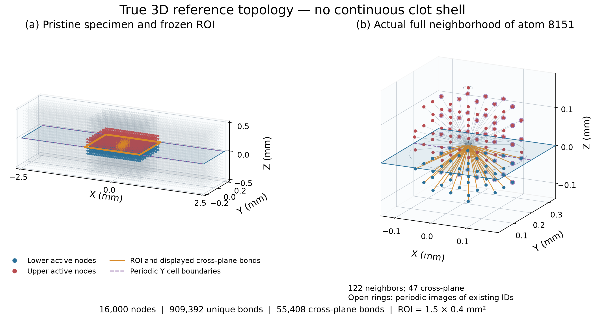
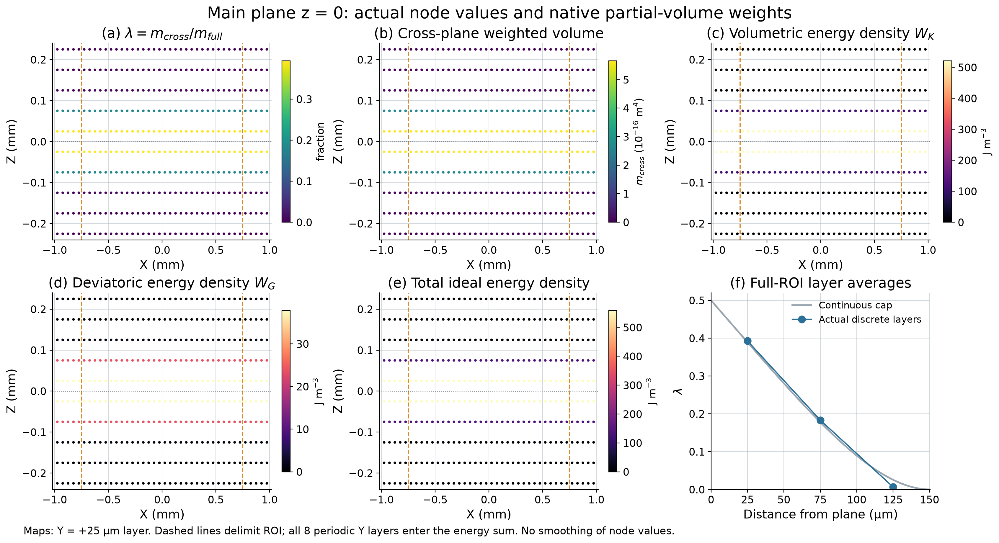
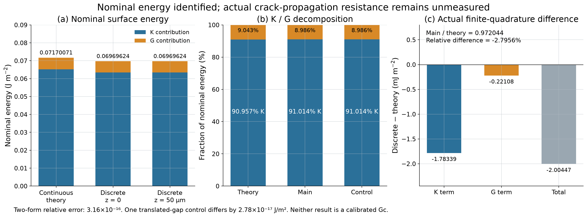
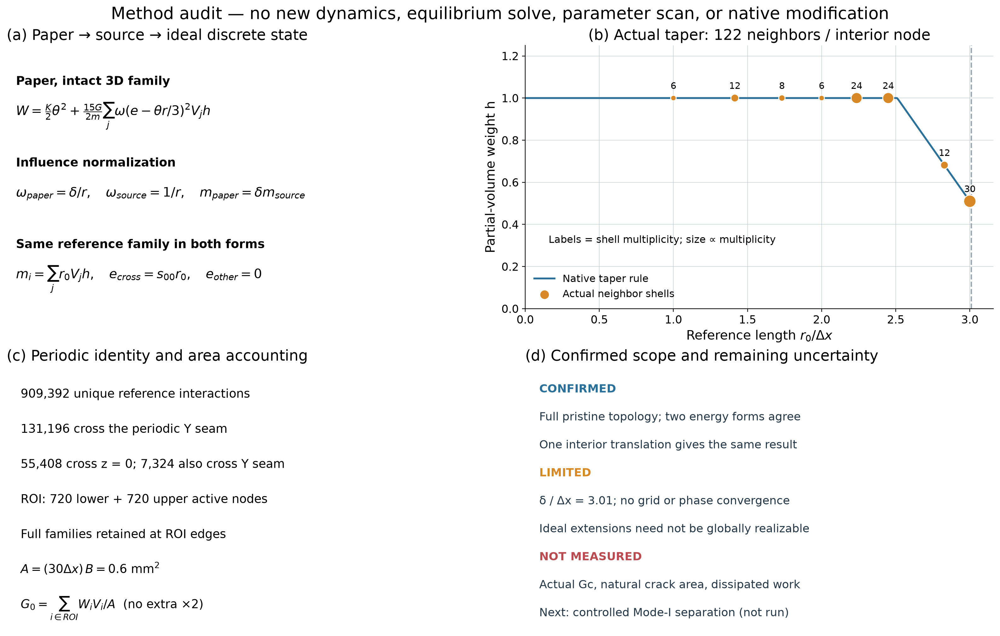

LPS 三维裂面标称能量识别
真实 50 µm 点阵、s00=0.15：G0_discrete = 0.069696237342 J/m²；连续理论 0.071700708333 J/m²。仅为理想标称能量，GC_EFFECTIVE 尚未测量。
中文审查报告与28项回答 · 完整精度结果
Fig1_reference_plane_and_bonds
SVG · PNG
Fig2_lambda_and_local_energy
SVG · PNG
Fig3_theory_and_discrete_energy
SVG · PNG
Fig4_method_and_uncertainty
SVG · PNG